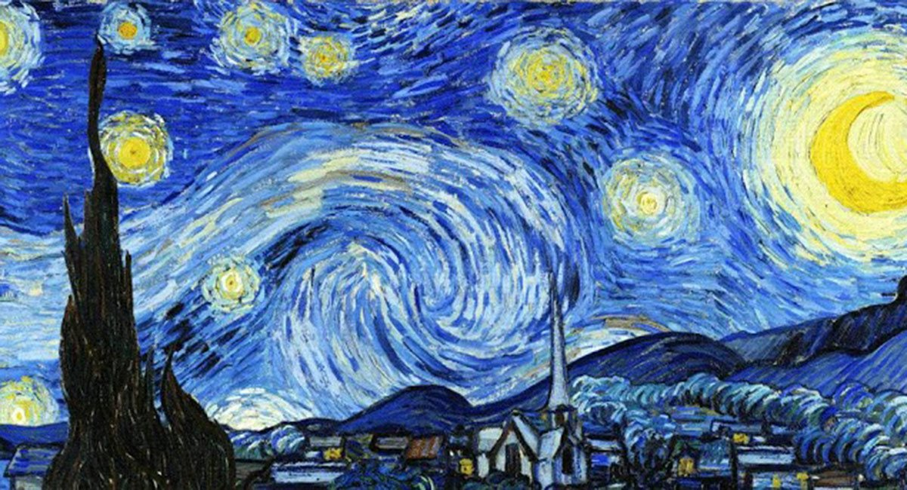
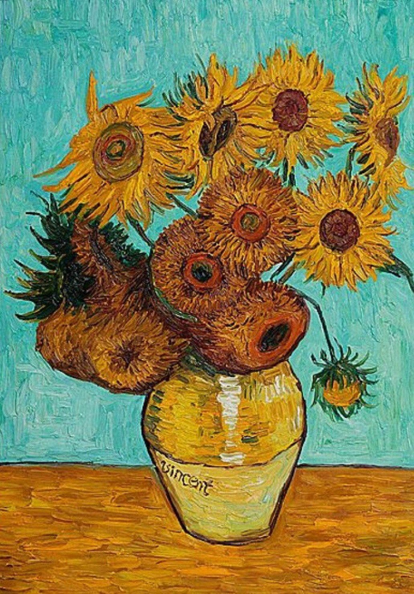
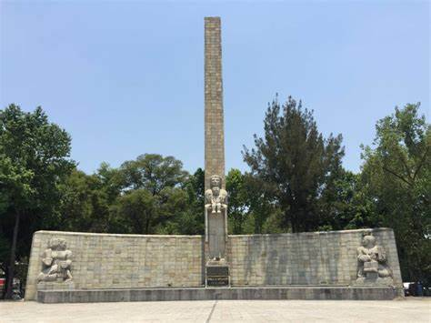

Van Gogh nació en 1853 y creció en Holanda. Fue criado en una familia religiosa con su padre siendo un ministro.Cuando terminó sus estudios, Vincent siguió la profesión de su tío y se convirtió en un comerciante de arte aprendiendo el comercio en Holanda y luego trabajando en Inglaterra y Francia. Vincent tuvo éxito e inicialmente fue contento con su trabajo. Sin embargo, pronto se cansó de la empresa de arte, especialmente en París, y perdió interés en el comercio. Después de regresar a casa, Vincent comenzó estudiar teología. Si bien muy apasionado y entusiastico, él falló los exámenes para entrar en un par de programas. Característico de su personalidad, era inteligente, capaz de hablar varios idiomas, pero él no creía que el latín era una lengua para predicar a los pobres. Durante este período, trabajó como misionero en una comunidad minera de carbon viviendo con los pobres trabajadores gente comúnes. A medida que su desarrollo como un predicador estaba estancando, su interés a aquellos alrededor de él aumentaba. Su vida como artista comenzaba.
En 1880, a 27 años de edad, Van Gogh entró en el Académie Royale des Beaux-Arts en Bruselas, Bélgica. El invierno siguiente, viviendo en Amsterdam, Vincent se enamoró, su corazón se había roto, y comenzó a pintar. Los próximos años se traduciría en poco éxito tanto en el amor y el arte.
Sus hermanos fueron:
Creó diferentes obras:


| Lugar | Localización | Características | Escudo | |
|---|---|---|---|---|
|  | El Gobierno de la Ciudad de México, da a conocer el arranque de las obras para realizar el Paseo Urbano Monumento a la Madre, anunciado en diciembre de 2016, después de dar a conocer el proyecto ganador, elaborado por el despacho Rzero+PARA.El Paseo Urbano Monumento a la Madre conecta a cuatro importantes colonias de la zona centro de la CDMX: San Rafael, Cuauhtémoc, Tabacalera y Juárez. También es paso para quienes transitan hacia y del Centro Histórico, al sur, al norte y al poniente. | El Monumento a la Madre, uno de los más representativos de la Ciudad de México, fue inaugurado el 10 de mayo de 1949, por el presidente Miguel Alemán Valdés.Su construcción comenzó el 10 de mayo de 1944, cuando el presidente Manuel Ávila Camacho puso la primera piedra.Iniciativa del entonces Secretario de Educación Pública, José Vasconcelos y el periodista Rafael Alducin, fundador del diario Excélsior para rendir un homenaje de amor y ternura.La obra arquitectónica de José Villagrán García y el conjunto escultórico de Luis Ortiz Monasterio. |